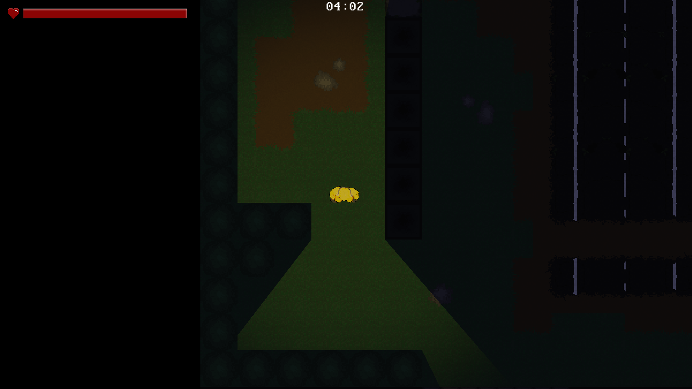
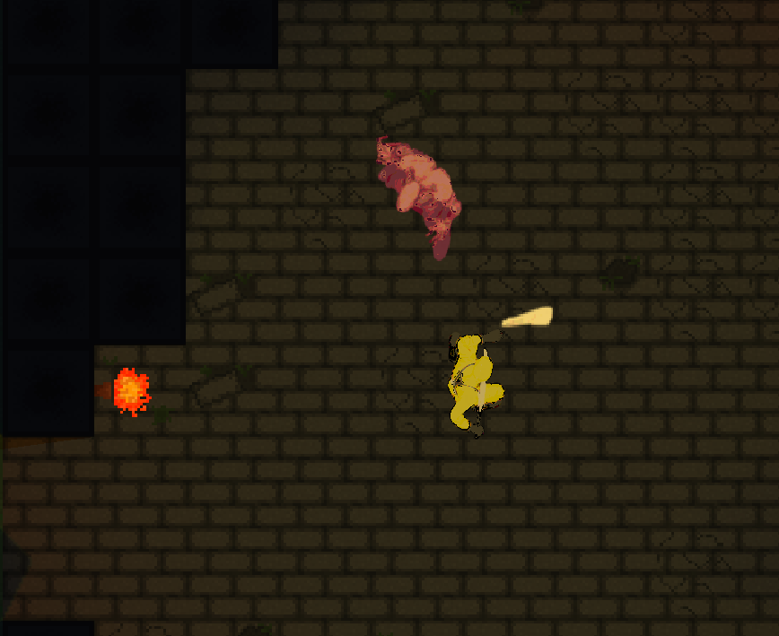
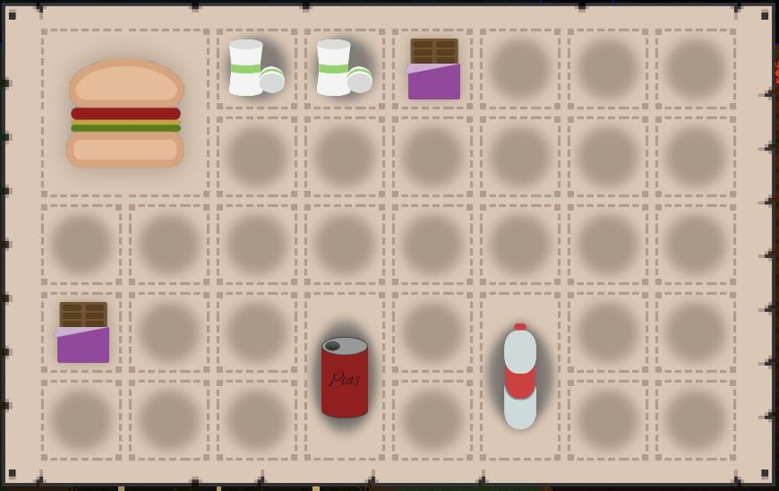
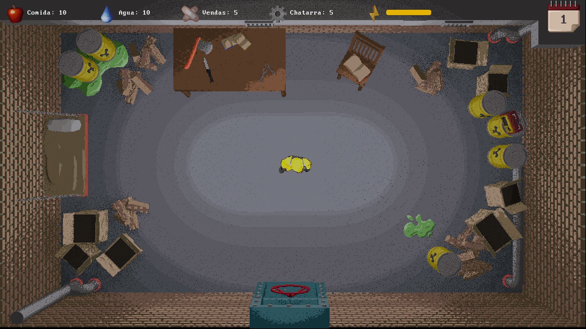
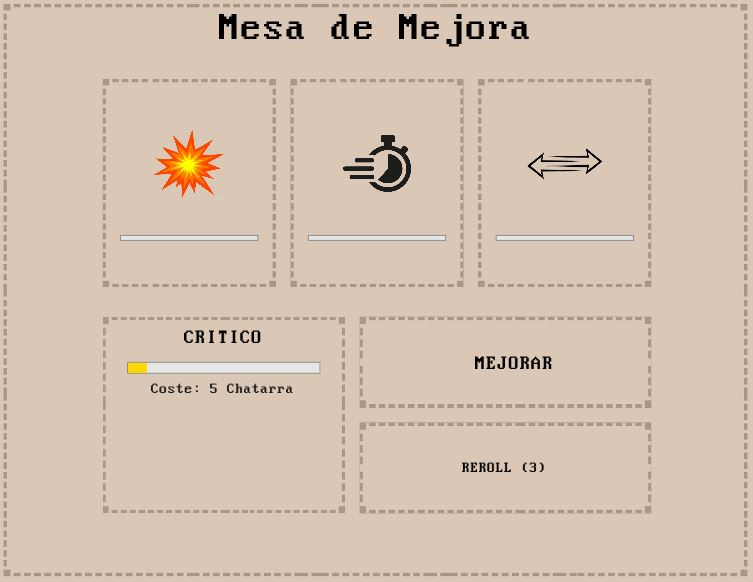
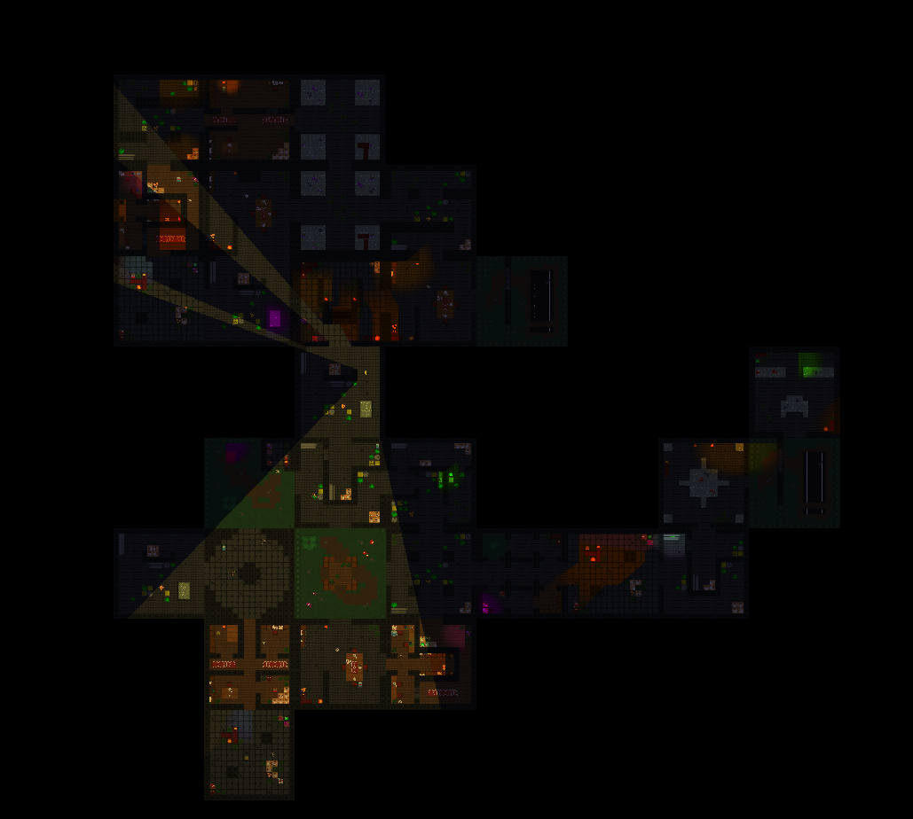

Gestión de recursos
Comida, agua, baterías, vendas y chatarra. Cada día consumes recursos para sobrevivir y entras en penalización si te quedas sin alguno.
Proyecto académico · Universidad Complutense de Madrid
Sobrevive. Explora. Fabrica el traje antes de que el búnker colapse.
Tras un evento nuclear global, el exterior está contaminado por radiación. Vives en un búnker que empieza a fallar y solo los asentamientos militares conservan equipamiento avanzado.
En Bunkers Inc. alternas entre la gestión de tu base y expediciones procedurales al exterior. Cada día decides si arriesgarte a salir a por recursos, mejorar tu arma con la chatarra que has reunido o quedarte a salvo. Tu objetivo: conseguir el traje antirradiación militar para alcanzar el asentamiento antes de que el búnker colapse.
Combate cuerpo a cuerpo direccional, inventario tipo rejilla, eventos diarios por radio, jefes con piezas del traje y una tensión constante entre volver con las manos llenas y volver con vida.
El bucle del juego se divide en dos zonas: la seguridad del búnker y el riesgo del exterior.
Comida, agua, baterías, vendas y chatarra. Cada día consumes recursos para sobrevivir y entras en penalización si te quedas sin alguno.
Cada mañana la radio del búnker comunica eventos internos y externos: variaciones de loot, oleadas de enemigos o pérdidas de comida.
Invierte chatarra en mejorar daño, velocidad, rango, crítico o fortuna. Tres opciones aleatorias por mejora y un reroll cada vez más caro.
Ataque direccional a 8 direcciones. Enemigos con máquina de estados (Idle, Patrol, Chase, Attack, Return) y escalado por fases.
Capacidad limitada con piezas de distinto tamaño. Arrastra, organiza y decide qué te llevas. Al volver, todo se vuelca al almacén.
Mapas de salas conectadas construidos con tilemaps. Iluminación con linterna, tiempo límite por contaminación y jefes que dropean piezas del traje.
Cada amanecer se anota lo ocurrido durante la noche, el estado de tu salud y una estimación de cuánto te queda con los recursos actuales.
Recordatorio permanente de la meta y de las reglas básicas. Pensado para reorientarse al retomar la partida tras un parón.
Compendio estilo bestiario con tres categorías: elementos del búnker, tipos de enemigo y coleccionables ocultos por las expediciones.
Cada fase de la partida culmina con un militar mutante que custodia una pieza del traje antirradiación. No basta con sobrevivir: hay que estar preparado cuando aparezcan.
El primero. Aparece cuando aún estás encontrando tu ritmo. Si lo derrotas, te llevas la primera pieza del traje y un mensaje claro: hay más en camino.
A mitad de partida la presión aprieta. El segundo jefe llega cuando los recursos escasean y los enemigos pegan más fuerte.
El último obstáculo. Cae justo cuando el búnker entra en cuenta atrás. Sin esta pieza, no hay traje. Sin traje, no hay escapatoria.
Una mirada al prototipo actual del juego.
Tráiler del prototipo · Hito 3 · 2HN Games
Gameplay · Hito 3 · 2HN Games






Disponible en itch.io y como build directa en GitHub Releases.
Descarga la última build, deja un comentario o danos una propina. Recomendado.
Versiones etiquetadas, instalador y código fuente. Para nostálgicos del Releases.
REQUISITOS Windows 10/11 · 64-bit. Compatible con teclado/ratón y mando (PS5 / Xbox).
Once estudiantes detrás del proyecto.
Juegos y obras que dieron forma a las mecánicas y a la atmósfera de Bunkers Inc.
Ciclo por días, presión temporal y tensión de "salir o quedarse".
Iluminación, sensación de vulnerabilidad y looteo con peso real.
Salas conectadas, ritmo de entrar → resolver → loot → avanzar.
Inventario como puzle espacial: tamaño, organización y decisiones de extracción.
Perspectiva cenital, delineado y contorno marcados de los personajes.
Activos de terceros utilizados en el desarrollo, con su correspondiente atribución.
Animaciones y modelos base de enemigos. Post-procesados por código en Blender para modificar texturas, resolución y paleta de colores.
mixamo.com →Modelo 3D del jugador: Poppy Playtime Chapter 5 — Hazmat Guy.
Ver en Sketchfab → CC Attribution-NonCommercialEfectos de sonido varios: cerrar libro, estampar sello, hover y click de botón, dormir (1 y 2), logro / descubrimiento, recoger y soltar items del inventario, notificación de "no puedes dejar esto aquí", disparo de arco de enemigos, pasos, page flip, radio static y anvil hit.
pixabay.com →Sonido de presionar botón (UI).
pixabay.com →Sonido de dormir (3) y ataque del jugador.
pixabay.com →Ataques cuerpo a cuerpo de los enemigos.
pixabay.com →Sonido del tutorial escribiéndose en pantalla.
pixabay.com →Sonido de muerte del jugador.
pixabay.com →Ambiente de sabana.
pixabay.com →Sonido de puerta metálica abriéndose.
pixabay.com →